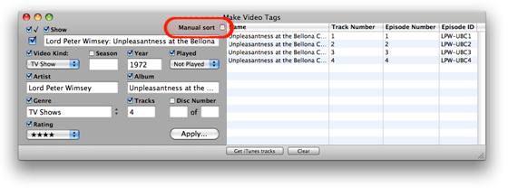

Using Make Video Tags
Sorting
By default, tracks are automatically sorted by Episode Number. However, you can sort the tracks by clicking on any column name to sort by that tag.
To manually sort the tracks check the Manual sort checkbox. This will enable you to sort tracks by dragging each track row to a new position.

About Manual Sort
When Manual sort is checked the track rows are initially sorted in their playlist's Play Order, which, depending on how you have sorted them in iTunes, may not necessarily be their currently sorted order. However, the way the tracks are sorted in Make Video Tags does not have to correlate with their order in iTunes; the application knows which tracks are which and does not depend on the iTunes track selection order.
Clicking a column name has no sorting effect when Manual sort is checked.